Melissodes rivalis Cresson, the western thistle long-horned bee, is a specialized species of Nearctic bee
native to, and occurring in, the western united states (Laberge, 1956a). Like all Melissodes, male M. rivalis have long antennae, and the
females have short antennae in comparison (see "Genus" page for more information). This species resides in the subgenus M. (Eumelissodes)
Laberge, and is closely related to M. desponsus (treated more thoroughly in “Taxonomy and Phylogeny”) . Both sexes of M. rivalis are
somewhat distinct from other M. (Eumelissodes) Laberge, and the females can be distinguished by their often parallel inner eye portions,
the dark brown to black hairs of inner surfaces of the hind bastitarsi, and the pale pubescent bands on the terga, which are often
present on terga three, two, or, four, if not, then usually white pubescence is present laterally on at least one of the terga (Laberge,
1956a; Laberge, 1961). If there is still no white hairs on the terga, then females can also be distinguished by the patch of black
mososcutal hairs that surpasses the size of the dark patch of hairs on the scutellum (Laberge, 1956a). Males can be distinguished from
that of other M. (Eumelissodes) Laberge by their first flagellar segment, which is longer than, or equal to, two-fifths the maximum length of the
second, pale pubescent bands present on terga two, three, often four, and often five, and by the clypeaus’ often darkened posterior edge
(see “Description and Identification” for more information on both sexes) (Laberge, 1956a; Laberge, 1961). M. rivalis is seemingly an
oligolege of the genus Cirsum, hence their common name, in which the females use this plant’s pollen to provision their nests
(Laberge, 1956a).
Description and Identification
Based on Laberge's (1956a) description, Melissodes rivalis are medium sized setacouse bees. Females range from 12 to 17 millimeters in
length and 4.5 to 6.0 millimeters in width (width measured at the widest portion of the metasoma). Males are a bit smaller, being about
11 to 16.5 millimeters in length and 4 to 5 millimeters in width (width measured at the widest portion of the metasoma). The female's
first flagellar segment is on average 2.03 times the size of the second flagellar segment (standard deviation 0.036). The males are the
opposite where the second flagellar segment is on average 2.88 times the size of the first flagellar segment (standard deviation 0.062).
Female wing length is 25.14 millimeters on average (standard deviation 0.339 millimeters), and male wing length is 23.94 millimeters on
average (standard deviation 0.088 millimeters). Females have an average of 15.25 hamuli (standard deviation 0.367), while males have an
average of 13.85 (standard deviation 0.318).
Female
According to Laberge (1956a), the description of female M. rivalis is as follows: the integument is black, differing at the eyes, which are
usually grayish blue; the wing membranes, which are infumate brown; the wing veins, which are black; the apical half of the mandibles, which
are rufescent, and in the apical area of the apical half, there is a wide golden macula; the underside of flagellar segments 2-10, which are
reddish brown; the distitarsi, which is dark red; the tegulae, which are piceous; and the tibial spurs, which are piceous. The surface of the
clypeus is somewhat shiny, but dulled with coarse transverse shagreening, and has punctures that are small, crowded, and separated by less
than one puncture diameter. The inner eye portions are parallel to one another (Fig. 1). The clypeus has a distinct longitudinal carina medially in the apical half, but also sometimes shorter (Fig. 2). The surface
of the supraclypeus is dulled with coarse reticular shagreening, and has large, deep, well-defined, round punctures. The surface of the flattened
area of the vertex is shiny to moderately, finely shagreened, and has deep and small round punctures that are variably separated. In some places,
the punctures are separated by less than half a puncture diameter, and in others by more than half, but less than two puncture diameters (< ½ < 2).
This flattened area extends posteromedially from the apices of the compound eyes. The four maxillary palpal segments decrease in length from basal
to distal in a ratio of about 3.5:2.5:2.5:1.0, and the last segment is usually even smaller. The galeae are dorsally shiny, shagreened apically
and laterally, and have small widely separated punctures with small straight hairs arising from them. The mesonotum is slightly dull with fine
reticular shagreening and has coarse punctures. These punctures are anteriorly and marginally separated by less than half a puncture diameter,
and they’re slightly larger and sparse, mostly separated by a minimum of two puncture diameters, posteromedially in front of the posterior slope.
However, the scutellum is very similar to the rest of the mesonotum, but has absent or finer shagreening. The surface of the metanotum is dulled
by tessellation, and has variably spaced, scattered punctures. The propodeum’s dorsal surface is basally reticulorugose and is coarsely punctate
apically and on the posterior surface excluding the upper impunctate median triangle on the posterior surface. The lateral surfaces of the propodeum
are matte and dull from coarse, dense tessellation, and are coarsely punctate. The lateral surfaces of the mesepisterna are fairly dull from
irregular shagreening, and have large and shallow punctures that are separated by less than half a puncture diameter. These punctures are very
dense medially, with some overlapping and merging into one another, but dorsally and posteriorly, they become smaller and more distinct.
The first tergum is dulled and has a latitudinal line of closely spaced punctures that appear just slightly past the middle of the tergum posteriorly.
This line of punctures is separated posteriorly from the small, round, shallow, and abundant basal punctures in the medial four-fifths; punctures
seemingly connect laterally (Fig. 3). The second tergum is dull and has tiny deep round punctures at the very base, the interband zone has small crowded lateral
punctures, but is generally impunctate medially, and the apical zone has tiny sparse punctures laterobasally. The
third and fourth terga are similar to that of the second, but the punctures are more abundant in the apical and interband zones and smaller.
M. rivalis can vary in setal coloration; the two extremes are as follows. The darkest specimens have black to dark brown head hairs, except
for the vertex and face, which are completely pale ochraceous, and sometimes a mix of ochraceous and dark brown. Laberge (1956a) states
“Metasoma with pale ochraceous hairs except as follows:...” then proceeds to list mesosomal structures, and later states “Mesosoma with
dark brown to black hairs except as follows:...” then proceeds to list metasomal structures. This is most likely a typo and will be herein
treated as such. The mesosomal hairs are pale ochraceous except for the large posteromedian patch of dark brown to black hairs on the mesoscutum
that usually surpasses the anterior margins of the tegulae, but usually isn’t larger than the size of the dark patch on the scutellum (Fig. 4), and the medial dark brown to black hairs
on the scutellum. The tegulae and pronotal lobes have dark hairs. The general surfaces of the mesepisterna have dark brown to black hairs and
the lateral surfaces have dark brown hairs on the lower two thirds and sometimes higher. The lateral surfaces of the propodeum also have dark
brown to black hairs. The metasoma has dark brown to black hairs except for the basal area of the first tergum, which has long dark brown hairs, and the basal band of the second tergum, which usually has some pale
hairs. The leg hairs are dark brown to black other than the ochraceous to yellow scopa, and the dark red to black hairs on the inner surfaces
of the hind tibia and hind basitarsi. The palest specimens have white to grayish white head hairs, except for the vertex which has some brown
hairs. The surfaces of the mesepisterna have white to pale ochraceous hairs. The pronotal lobes have white to pale ochraceous hairs. The large
posteromedian patch of dark brown to black hairs on the mesoscutum reaches the middle portion of the tegula across the mesoscutum, and sometimes
surpasses it. The first tergum has long pale basal hairs. The basal band of the second tergum is white, and the distal band is pale ochraceous,
narrowed medially, usually interrupted medially, and does not reach the apical margin. The third and fourth tergum have a distal pale band of
pubescence, and the band of the fourth tergum is usually positioned apically. The fifth tergum has small white lateral tufts of hairs. The second,
third, and fourth sterna have reddish brown hairs medially, and pale hairs apicolaterally. The inner surfaces of the fore basitarsi have red to
reddish brown hairs, along with the inner surfaces of the middle bastitarsi, hind bastitarsi, and hind tibiae. The remainder of the leg hairs are black except for the ochraceous to yellow scopa.
M. rivalis ranges in setal color between these two dark and pale descriptions. As M. rivalis progressively lightens from the dark extreme to the pale
extreme, the pale tergal hairs start to appear. These pale hairs first develop on the base of the first
and second tergum. Next, lateral pale pubescence develops on the second tergum, then the third, and subsequently the fourth. Lastly, lateral pale
tufts develop on the fifth tergum. In the palest specimens, the lateral pale pubescence become complete bands, reaching completion in the same order
as the appearance of the lateral pale pubescence.
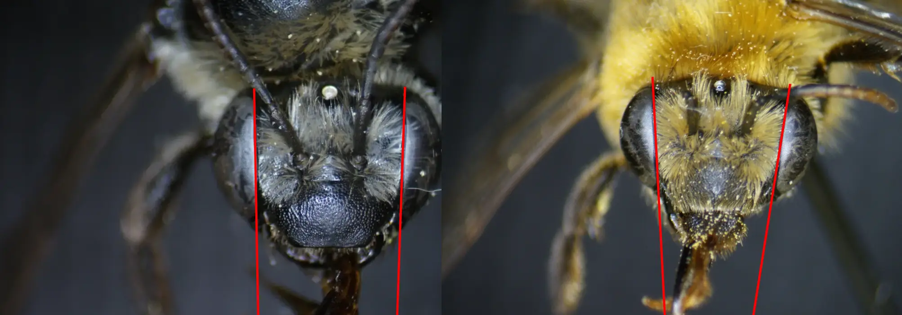Photo credits: Christopher Wilson (All Rights Reserved)
Fig. 1. A comparison of the inner eye margins of a femal M. rivalis (left), and a female M. agilis (right), illustrating the parallel nature of the inner eye margins of the female M. rivalis. Photo credits: Christopher Wilson (All Rights Reserved).
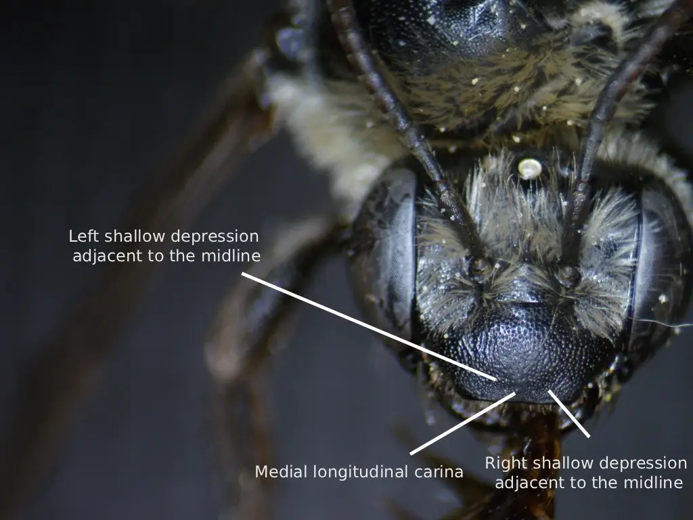Photo credit: Christopher Wilson (All Rights Reserved)
Fig. 2. A labeled diagram showing the longitudinal carina of the clypeus of a female M. rivalis. Photo credit: Christopher Wilson (All Rights Reserved).
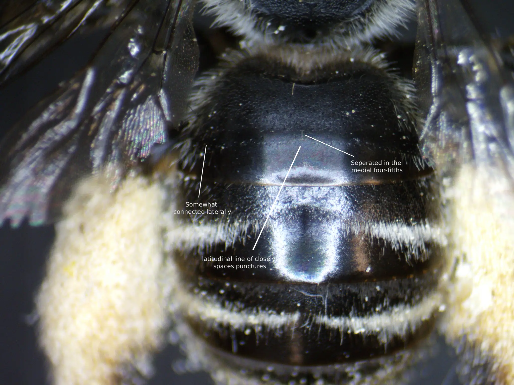Photo credit: Christopher Wilson (All Rights Reserved)
Fig. 3. A labeled diagram showing the latitudinal line of closely spaces punctures on T1 of a female M. rivalis. Photo credit: Christopher Wilson (All Rights Reserved).
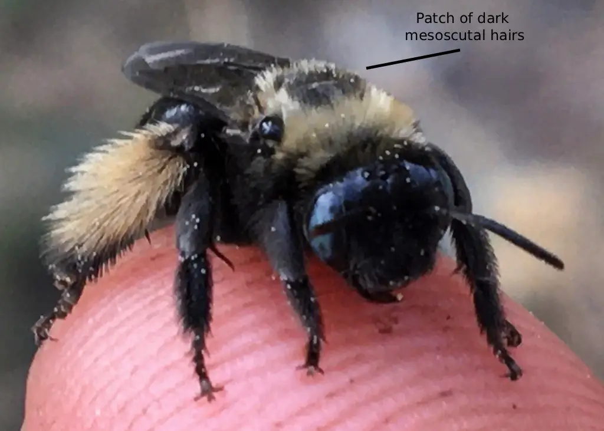Photo credit: Brian Dykstra (CC-BY-NC 4.0) Figure Gallery ➜')">
Fig. 4. A labeled diagram showing the patch of dark brown to black hairs on the mesonotum of a female M. rivalis. Photo credit: Brian Dykstra (CC-BY-NC 4.0).
Male
According to Laberge (1956a), the description of male M. rivalis is as follows: the integument is black, differing at the eyes, which are green to gray; the wing membranes, which are slightly
infumate and brown colored; the wing veins, which are black; the clypeus, which is paleish yellow (posterior margin of the paleish yellow area is angled upward to form an upside down V-shape in the median one-third),
excluding the brownish red apical margin and the black laterobasal notches denoting the tentorial
depressions (Fig. 5) (in individuals from the eastern portion of its range, the posterior margin of the clypeus usually becomes infuscated from the tentorial depressions to the middle); the underside of
flagellar segments 2-10, which are yellow to red; the distitarsi, which is dark reddish brown; the sterna, which are dark reddish brown; the apices of the terga, which are usually dark reddish brown;
the tegulae, which are piceous; and the tibial spurs, which are piceous. The first flagellar segment’s minimum length is usually no less than one-third the maximum length of the second segment
(as stated above), if not more (Fig. 6). The remainder of the characteristics are the same as the female described above except as follows: the punctures of the clypeus are smaller and denser than that
of the female; the surfaces lateral areas of the vertex are usually dull with shagreening; the first tergum’s basal four-fifths is punctate medially with small shallow punctures, and these
punctures reach the apex of the tergum laterally; the second tergum’s interband zone has small punctures with undefined edges that are sometimes, be it very rarely, sparser than those of the
interband zones on terga 3 and 4; the sixth sternum is shiny without shagreening, has basal small deep punctures, has distinct oblique carinae laterally positioned near the apex, a truncated
apical edge, and a short median concavity positioned posteriorly in the apical half between the apices of the aforementioned carinae.
In his M. rivalis description, Laberge (1956a) wrote a comparative treatment of the male terminalia, comparing it to M. desponsus. However, the only terminalia
descriptions for male M. desponsus are those of figures 114-117 from Laberge (1956b). In this current description, the male terminalia for M. rivalis will be based on figures 8-11
provided in Laberge (1956a) and figures 114-117 provided in Laberge (1956b). The seventh sternum does not narrow into a short neck, but instead is mounted to
the rest of the sternum by around seven-eights of the full sternal width. This can create a notch-like structure on the lateral interior portions of the seventh
sternum when looking at it dorsally. The apical half of the seventh sternum is almost two times as large as the basal half creating a fan-like shape, and has
several hairs ventrally on this apical half. The 8th sternum usually has a patch of relatively long hairs apicomedially, and, at the base of this patch, the hairs
shorten. The gonostylus is somewhat relatively slender with a few hairs dorsally, is less than one-half the length of the gonocoxite, and in the apical one-third,
it tapers slightly. The penis valve has a prominent dorsolateral lamella; the basal end of the lamella ends in an inflected tooth.
M. rivalis can vary in setal coloration; the two extremes are as follows. The darkest specimens have white to pale ochraceous head hairs, except for the
vertex, which has brown hairs. The mesosoma has white to ochraceous hairs except for the mesoscutum, which has a patch of dark brown hairs that reaches
anteriorly past the middle of the tegulae, and the scutellum, which has some dark medial hairs. The first tergum has long basal pale hairs, and short
dark apical hairs. The second tergum has a basal pale pubescent band as well as a distal pale pubescent band. The distal pubescent band is complete,
medially narrowed, and separated from the apical margin. The third tergum’s distal pale pubescent band is medially interrupted with brown hairs. Terga
four, five, six, and seven do not have any pale hairs. The legs mostly have pale hairs (Fig. 6), especially on the outer surfaces of the middle and hind tibiae,
except for the inner surfaces of the hind tibiae, the fore basitarsi, the middle basitarsi, and the hind basitarsi, which are red to reddish brown.
The palest specimens are similar to that of the darkest specimens except as follows: the hair on the head is completely white to pale ochraceous, and
has no dark hairs on the vertex. The mesosoma has completely white to pale ochraceous hairs with no dark patches on the mesoscutum or the scutellum.
Terga 2-5 have complete pale pubescent bands, and tergum 6 has long pale lateral tufts. Sterna 2-5 have red hairs medially, and pale ochraceous hairs
laterally, and the sixth sternum has entirely brown hairs. The legs have white to ochraceous hairs, except for the inner surfaces of the hind tibiae,
fore basitarsi, middle basitarsi, and hind basitarsi, which are red, and the hairs on the outer surfaces of the fore tarsi and fore tibiae, which are
brown.
M. rivalis ranges in setal color between these two dark and pale descriptions. As M. rivalis progressively lightens from the dark extreme to the pale
extreme, the pale tergal hairs start to appear. These pale hairs first develop laterally on the fourth tergum. Then, lateral pale pubescence
develops on the fifth tergum, and the pale band of the third tergum interrupted with brown hairs becomes complete. Next, the lateral developed pale
hairs on the fourth and fifth terga meet medially creating complete bands, as this happens, the dark hairs on the head and thorax turn pale. Lastly,
on the palest individuals, the dark hairs on the scutellum turn pale.
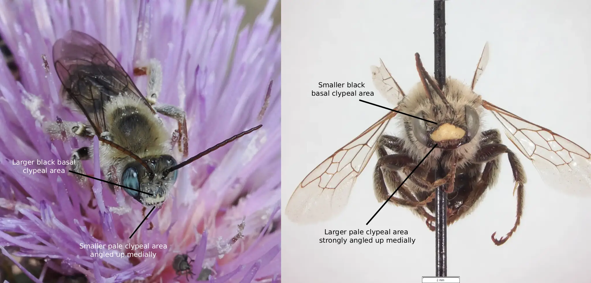Photo credits: Wendy McCrady (right) (CC BY 4.0); Monte L. Bean Life Science Museum (CC BY-NC 4.0) Figure Gallery ➜')">
Fig. 5. A labeled diagram showing the ranging irregular clypeal marking of 2 male M. rivalis individuals. Photo credits: (right) Wendy McCrady (CC-BY 4.0); (left) Monte L. Bean Life Science Museum (CC-BY-NC 4.0).
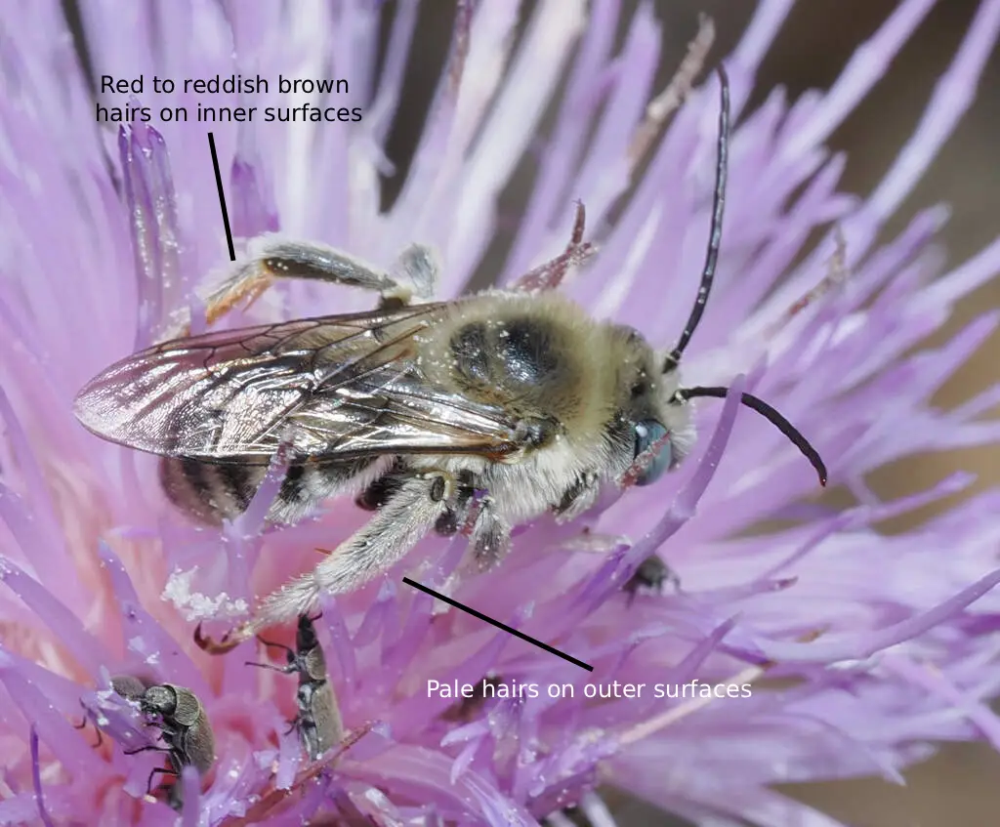Photo credit: Wendy McCrady (CC BY 4.0). Figure Gallery ➜')">
Fig. 6. A labeled diagram showing the pubescent coloration of the legs of a male M. rivalis. Photo credit: Wendy McCrady (CC-BY 4.0).
Location and Habitat
M. rivalis is a somewhat common Cirsum oligolect occurring in the western portions of North America. M. rivalis can be found in every U.S. state west of a longitudinal line drawn from
southeastern Texas to north central Minnesota, as well as southwestern Canada, and northern Mexico (Fig. 8). Although Laberge (1956a) previously stated that M. rivalis only occurs
in a range from northern California, southern British Columbia, southern Manitoba, and southern Texas, recent collections suggest that its range extends north to central British
Columbia , and south to northern Mexico (Discover Life, Ascher & Pickering, 2025) (Fig. 1). M. rivalis is a highly variable species in regards to morphological traits as shown above.
The following locational variability is derived from Laberge (1956a). The darkest specimens of both sexes were located in humid coastal areas of Oregon and California. These dark
females are quite distinct, so much so that they were originally described as M. desponsiformis in 1905 by Cockerell (treated more thoroughly in “Taxonomy and Pylogeny”). However,
the males located in this area that are assigned the “dark” variety (as this is where the dark females reside), are very similar to, and can’t be distinguished from, “paler” males
located further inland from British Columbia, Washington, Oregon, and California. Coastal and inland specimens seemingly gradient in color across the landscape, and a discernable
subspecies is likely unviable for this region. While not explicitly stated by Laberge (1956a), it is reasonable to assume specimens collected along the Rocky Mountain regions,
North Dakota, Minnesota, Saskatchewan and Manitoba are somewhat lighter, possibly nearing intermediate colors of vestiture, than those of coastal populations. Although few specimens
have been recorded in these locations, both sexes of M. rivalis collected in New Mexico, Kansas, and Texas are pale and seem to be strikingly distinct from ones collected in the
Rocky Mountain areas. Interestingly, females collected in Arizona are pale, similar to those collected in southeastern prairie states, and males are instead dark, similar to those
collected in the Rocky Mountain areas, so much so, it’s difficult to differentiate the two. Overall, individuals residing in the upper most parts of the United States and the southern
portion of Canada, as well as Utah and Colorado are, in color, intermediate compared to the darker coastal populations of California and Oregon, and the paler populations of the
southeastern prairie states. Even with this broad statement, many populations near one another differ in vestiture brightness.
Male clypeal markings differ based on location as well,
lightening from the darkest specimens, based on how large the posterior infuscation is (i.e. the smaller the infuscation, the lighter the clypeus) in the following order: 1) Arizona, 2)
Oregon, northern California, 3) southeastern Utah, 4) western North Dakota, southern Manitoba, eastern Wyoming, northeastern Colorado, 5) New Mexico, eastern North Dakota, Texas, and
Kansas. However, males from southern Idaho and northern parts of the Californian coast had predominantly pale clypei. This, along with the dark clypei of males in Arizona and Utah is
somewhat irregular as the rest of the clypei follow a smooth gradient across the landscape. Based on the range of M. rivalis, the darkest clypei of the males are located in the
northwest and the lightest in the southeast and northeast, with a few aforementioned irregularities. Wing and clypeal length were also measured and found to have a gradient across
the landscape. Laberge (1956) noted that these two measurements are highly correlated (i.e. longer wings, longer clypeus), so the only description given is that of wing length,
although the clypeus follows this same pattern. Male wing length increased in mean size based on location in the following order: 1) Oregon and northern California, 2) British
Columbia, North Dakota, Manitoba, Utah, Colorado, and Arizona (Texas may be included in this wing length bracket; quite a bit larger than those of Oregon and northern California),
3) New Mexico and Kansas, 4) north central Washington. Although Laberge (1956a) states that “There seems to be an even cline in increasing male wing length toward the northeast…”
This shows that the largest wing (and clypeal) length for males is in the northwestern portion of its range, and that there doesn’t seem to be a clearly defined locational cline
in which wing length increases or decreases. These clines are quite separated and uncorrelated to the ones described above. Female wing length based on location is similar to
the males, but differed in northwestern Oregon and southwestern Washington, in which the wing lengths were the smallest, higher variability in southeastern populations, and in
the California and Oregon coast, where a noticeable abrupt shift in increased wing length towards the northeast occurs.
Fig. 8 Map showing an estimation for the known distribution for M. (Eumelissodes) rivalis. Each point represents
1 or more occurrences; occurrences that don't have coordinates are not included. Data compiled from DiscoverLife (Ascher & Pickering 2025) and GBIF (Secretariat 2023).
Fig. 9. A showing the phenological activity of M. rivalis. The x value is the month, and the y value is the number of documented observations. Data compiled from DiscoverLife (Ascher & Pickering 2025) and GBIF (Secretariat 2023).
Bionomics
M. rivalis are, just like all Melissodes, ground nesting bees. In 1926, Scullen found and documented the nesting site of M. rivalis’ (presented as M. mysops) nests. These nests were
found on Coos Bay along the Oregon coast, located at the top of a sea clif in the side of a sand bank in an aggregation of approximately 60 nests spanning about 20 feet. Males and
females, presumably the ones within the nesting aggregation, were collected from nearby Cirsum sp. On opening of two of the nests, pollen provisions, consisting of Crisum pollen,
were present, however, there were no eggs. This implies that females provision their nests before laying eggs (like most solitary bees), and, based on other species nesting accounts
(M. agilis), means that successful completion of egg laying is directly dependent on pollen availability. Possibly, if sufficient resources are unavailable, a female may instead
choose to lay limited eggs in favor for self sustainability, although, this is speculation. Scullen (1926) states that three trips were made to assess nesting biology and progression.
The first made on the second of July, in which the dissected nests contained only provisions (as stated above). The second trip, made July 13, in which some nests were found to
have half-grown larvae, and in others, eggs had yet to hatch. Finally the third visit eight days later, July 21, the larvae were seemingly fully grown. Although these are separate
nests each trip, most likely each with somewhat different stages of progression, it’s possible that the time from the first to last examination (19 days) is the length in which
eggs develop into fully grown larvae. This short window of development is further supported by the field note of the second trip where half-gown larvae and eggs were found in the
same nests simultaneously. If the development from egg to larva occurs in this time, then it’s reasonable to assume when half-grown larvae are present, females may still be
provisioning their nests and laying eggs, as only approximately 11 days (i.e. time from first trip with eggs, July 2nd, to second trip with half-grown larva, July 13th) have
passed since egg laying commenced. Although not stated in his 1926 paper, Scullen shared his field notes for publication in Laberge (1956a), and these notes, although taken by
Scullen, will be herein recognized as Laberge’s paper. The nests consist of one main branch and two to four crooked lateral branches measuring one to two inches extending in
multiple directions from this main branch approximately every one to two inches (Laberge, 1956a). At the bottom of these branches lies a cell provisioned with presumably
Cirsum pollen and “honey” (although “honey” could possibly be referring to nectar instead) with one oblong egg atop the provision. The walls of the main branch are shiny and
smooth with no discernable coating of secretion (Laberge, 1956a). A mention of one cell with an egg suspended by “web like threads” was a strange irregularity, although,
as noted by Scullen in his notes, this was likely mold (Laberg, 1956). The nesting behavior presented by Scullen and his notes published in Laberge (1956) are interesting
and differ from other Melissodes nesting biology. Notably, only 2-4 lateral burrows and presumably cells, were found in contrast to the 1-27 (average of 11) found for M.
agilis (Parker, F. D et al., 1981). Fewer lateral branches and cells may be found due to nest damage upon excavation, but if not, this could be a result of Coos Bay having
insufficient food resources, and therefore, female M. rivalis were not able to provision many cells. The only note pertaining to a parasite for M. rivalis is the possibility of Triepeolus paenepectoralis (Lopez, 2017).
Flower records
All flower records included in this list are from reports in the literature. Each flower has a parenthesized reference listed after it, corresponding to the literary
work in which it was recorded. Apocynum sp. (Laberge, 1956a), Asclepias sp. (Laberge, 1956a), Aster sp. (Bohart et al., 1973), Carduus sp. (Laberge, 1956a; originally
presented as “Carduus aculescens”, however, this name cannot be found to be a valid or synonymous name in any taxonomic databases), Cirsium sp. (Laberge, 1956a),
Cirsium arvense (Laberge, 1956a), Cirsium brevifolium (Hawse, 2024), Cirsium douglasii (Lopez, 2017), Cirsium engelmannii (Laberge, 1956a), Cirsium occidentale
(Lopez, 2017), Cirsium pumilum (Laberge, 1956a), Cirsium undulatum (Laberge, 1956a), Cirsium vulgare (Laberge, 1956a), Grindelia platyphylla (Laberge, 1956a),
Helianthus annuus (Laberge, 1956a), Monardella sheltonii (Lopez, 2017), Penstemon sp. (Laberge, 1956a), Penstemon cyananthus (Laberge, 1956a), Petrophytum sp.
(Bohart et al., 1973), Plectocephalus americanus (Laberge, 1956a), Rudbeckia sp. (Laberge, 1956a), Solidago sp. (Laberge, 1956a), Solidago glutinosa (Bohart et
al., 1973), Teucrium sp. (Laberge, 1956a), Trifolium pratense (Laberge, 1956a), Trifolium repens (Laberge, 1956a), Verbena sp. (Laberge, 1956a).
M. rivalis was originally described in 1872 by Ezra Townsend Cresson from five male specimens. When first described, M. rivalis was given no
subgenus as none had been proposed. These specimens, collected by Gustaf Wilhelm Belfrage and Jacob Boll, were found in Texas. Within the description,
Cresson (1872) described male M. rivalis as having “head and thorax clothed with a dense whitish pubescence,” and “each (abdominal) segment with a
sub apical fasciae of short appressed whitish pubescence…” With these specimens being collected in Texas (Cresson, 1872), it’s unsurprising that they
follow the pale description above, having all terga bare white pubescence and light hairs on the vertex of the head. In June of 1905, Theodore Dru
Alison Cockerell described M. rivalis under the name “Melissodes mysops” from one male and three females (Cockerell, 1905a). The description of the
male states that the “clypeus lemon-yellow, its upper margin black,” and “scutellum with black hairs in middle…abdomen narrower and longer (than M.
cnici; now M. desponsus), with weak light hair-bands, failing in the middle” (Cockerell, 1905a). This matches quite well with the intermediate description
of male M. rivalis, which makes sense, as the specimens were collected in Colorado. The female description mirrors this as well with the statements
“distinct pale hair-bands, especially on the third and fourth (abdominal) segments,” and “apex of abdomen (has) dark fuscous or black (hairs)” (Cockerell,
1905a). This is likely referring to the “fourth step” of lightening where lateral pale pubescence is apparent on terga 2-4, but no lateral pale lateral
tufts have developed on T5. In September of 1905, Henry Louis Viereck et al. described M. rivalis under the name “Melissodes desponsiformis” from a female.
This description compared M. desponsiformis to M. mysops using characters such as “palest on vertex…cheeks with black or sooty hair” for M. desponsiformis
and “cheeks with yellowish-white or grayish-white hair” for M. mysops (Viereck et al., 1905). This is seemingly comparing a darker M. rivalis specimen (M.
mysops), having darker ochraceous head hairs, to the lighter specimen (M. desponsiformis), having lighter pale hairs. M. desponsiformis is also described
as having “hairbands on segments 3 and four, and a line on each side of two” (Viereck et al., 1905). This is strange as the progression of hair bands is
off according to Laberge’s (1956a) description, although, individuals will vary and this seems to be a representation of a somewhat intermediate
coloration, which makes sense as the female M. desponsiformis was found from inland Oregon, not coastally. In October of 1905, Cockerell
described M. hexacantha and M. nigrosignata in the same article as two separate species based on three M. hexacantha males and two M. nigrosignata females all of
which were collected in Arizona (Cockerell, 1905b). The two cannot be compared because of the different sexes, but descriptions can be compared to those
of female and male M. rivalis to see what portion of the cline they belong. Both of these specimens were described to have bands of pubescence on terga 2-4, M. hexacantha having “not defined basal
one on two,” and M. nigrosignata having “an entire basal band (on T2) and a broadly interrupted median one” (Cockerell, 1905b). These “two species” also
had the hairs on terga five and six dark with M. nigrosignata having “black hair, long white hair showing at extreme sides of the fifth,” and M. hexacantha
having “chocolate-color (hairs). (Cockerell, 1905b)” Cockerell made a note in the description of M. nigrosignata of how this “species” can be distinguished
from that of M. mysops by the light lateral thoracic hairs, and the “bicolored middle tibiae.” As M. nigrosignata was found in Arizona (Cockerell, 1905b),
it makes sense that this specimen would fall into the paler category, not the palest, but nearing so. M. hexacantha, also found in Arizona (Cockerell,
1905b), seems to be somewhat darker with statements such as "mesothorax (hairs) black,” and “vertex with very few black hairs at sides.” This also makes
sense as Arizona is one of the setal coloration cline irregularities, where females are light and males are darker (Laberge, 1956a). However, there are still light somewhat defined bands on terga 3 (darkest specimens have this) and 4, though this just "step 1" as no white hairs were visible laterally on the fifth tergum. Very little is accessible
in regards to the description of M. habilis, although what is stated is that a variation found from a male specimen in Colorado has an almost non-existent
pale band on the fourth tergum (Cockerell, 1937). Showing this may be one of the darkest specimens. The substantial differences in setal colorations across
the landscape are most likely what lead to the many redescriptions of M. rivalis. Laberge found that the distinctions each of these authors made based on
setal differences were actually individual-to-individual intraspecific variations occurring due to a cline in color across the landscape, and not clear-cut
separate species (Laberge, 1956a). Based on the code outlined by the International Commission on Zoological Nomenclature, section 23.1 states that if the
valid name of a taxon should be the oldest one (i.e. M. rivalis as it was published in 1872). As M. rivalis has been described under multiple different
names, those respective names are appointed junior objective/subjective (case dependent) synonym status, and M. rivalis becomes the senior synonym (ICZN).
When redescribed in his second revision, Laberge (1956a) assigned M. rivalis to the subgenus M. (Heliomelissodes) Laberge. This subgenus only included two species,
those being M. rivalis and M. desponsus, with M. desponsus as the type species (Laberge, 1956a). These two species are both oligolects of Cirsum.
Males of this subgenus have distinctly long first flagellar segments, and distinctly short second ones while females have parallel inner eye margins (Laberge, 1961). However, in 2023, a revision of the tribe Eucerini, in which Melissodes reside,
synonymised Heliomelissodes with the subgenus M. (Eumelissodes) Laberge, most likely due to the few amount of taxa within M. (Heliomelissodes) Laberge (Freitas et al., 2023).
These species, M. rivalis and M. desponsus, are quite distinct within M. (Eumelissodes) Laberge, and do not specifically resemble any other M. (Eumelissodes) Laberge besides
from one another (see more in “Similar Taxa”).
Similar Taxa
As previously stated, M. rivalis and M. desponsus form somewhat of a clade within their subgenus. Both species are separated largely in range, M.
rivalis being westwars, and M. desponsus eastward. However, darker specimens of M. rivalis can resemble M. desponsus. Although M. rivalis’ description
has already been treated above, a subsequent comparison of the two may shed light on some important differences. Both species share a very similar
phenology and flower preference (Cirsum), with peak activity occurring around July and August (see Fig. 9) (Laberge, 1956; GBIF Secretariat, 2023). Although the
greatest distinguishing factor between M. rivalis and M. desponsus is seemingly their locality, distinctions in their morphology are important identifiers.
All descriptions listed below are derived from Laberge (1956a).
Female
The eyes of M. rivalis are often grayish blue, whereas in M. desponsus, the eyes are grayish blue to green. The wing membranes of M. agilis are
infumate with distinct brown coloring, whereas in M. desponsus, the wing membranes are infumate with less distinct brown coloring. The apical margin
of the clypeus of M. rivalis is black, whereas in M. desponsus, it’s usually rufescent. The clypeus of M. rivalis has a distinct longitudinal carina
medially in the apical half, but also sometimes shorter, and the surface has crowded, irregular punctures. Whereas in M. desponsus, the punctures
are more “normal” and there is no defined medial carina (Fig. 10). The punctures on the posteromedian area of the mesoscutum of M. rivalis are sparse,
mostly separated by 2 puncture diameters, sometimes more. Whereas in M. desponsus, the punctures are separated by slightly more than half a puncture
diameter.
Setal differences are as follows: The darkest M. rivalis have a large patch of dark hairs on the mesonotum that usually surpasses the anterior margins
of the tegulae, if not, then at least reaches them. Whereas in M. desponsus, the mesoscutum usually has a small patch of dark hairs, but this patch
never reaches the median of the tegula, and very rarely exceeds the size of the small dark patch on the scutellum (Fig. 11). M. rivalis has the
mesonotal patch of dark hair almost covering the entire scutellum, whereas in M. desponsus, the scutellum has a very small patch of dark hair medially
(Fig. 11). M. rivalis has dark hairs on the lower two-two thirds of the mesepisterna and sometimes more, whereas in M. desponsus, the dark hairs are
present at least on the lower one-half and sometimes more. M. rivalis have dark hairs on the pronotal lobes and tegulae, whereas in M. desponsus, the
hairs are pale ochraceous. The hairs on the first tergum of M. rivalis are long and brown, whereas in M. desponsus, the hairs are pale ochraceous,
and usually mixed with a few dark hairs, on the basal three-fifths. The hairs on the inner surfaces of the hind tibia and hind bastitarsi of M. rivalis
are dark red to black. Whereas in M. desponsus, the inner surfaces of the hind tibiae are red to yellow, and the inner surfaces of the hind bastitarsi
are dark brown to black. The pale M. rivalis have grayish white to white hairs on the head with a few brown on the vertex, whereas in M. desponsus, the
hairs are completely pale ochraceous and sometimes ochraceous with brown hairs. M. rivalis has white to pale ochraceous pronotal and mesepisternal
hairs, whereas in M. desponsus, these hairs are dark brown to black on the bottom half of the mesepisterna, sometimes higher, and pale ochraceous on
the pronotum (Fig. 12). M. rivalis has a large patch of dark hairs on the mesonotum that usually reaches the middle of the tegulae, sometimes surpassing
them (extends anteriorly slightly less than dark M. rivalis). Whereas in M. desponsus, the mesoscutum usually has a small patch of dark hairs, but this
patch never reaches the median of the tegula, and very rarely exceeds the size of the small dark patch on the scutellum. The first tergum of M. rivalis
has long basal pale hairs, whereas in M. desponsus, the hairs are white to pale ochraceous, and often have some darker hairs mixed in. The second tergum
of M. rivalis has a white basal band, and a pale ochraceous distal band that is medially narrowed and usually interrupted medially. Whereas in M.
desponsus, the basal band has some pale pubescence, but the distal band is dark brown to black (Fig. 13). The third and fourth terga of M. rivalis have
distal bands of pale pubescence (the band on the fourth tergum positioned apically), whereas in M. desponsus, these bands are dark brown to black
(Fig. 14). The fifth tergum of M. rivalis has small white lateral tufts of hairs, whereas in M. desponsus, the fifth tergum is fully dark brown to black.
Sterna 2, 3, and 4 of M. rivalis have pale apicolateral hairs and reddish brown medial hairs, whereas in M. desponsus, these hairs are dark brown to black.
The inner surfaces of the fore basitarsi of M. rivalis have red to reddish brown hairs, along with the inner surfaces of the middle bastitarsi, hind
bastitarsi, and hind tibiae. Whereas in M. desponsus, the inner surfaces of the hind tibiae are red to yellow, and the inner surfaces of the fore bastitarsi,
middle bastitarsi, hind bastitarsi, and hind tibiae are black.
Table 1. A comparison of trait differences between female M. rivalis and M. desponsus. The traits are sorted
from most to least diagnostic. Traits highlighted in green
are the most important traits when comparing between M. rivalis and M. desponsus. Traits not explicitly referring to hair refer to integument.
Three seperate sections of the table are given 1) integument comparison 2) dark M. rivalis comparison 3) pale M. rivalis comparison. Each of these
sections follow the pattern listed above respectivly.
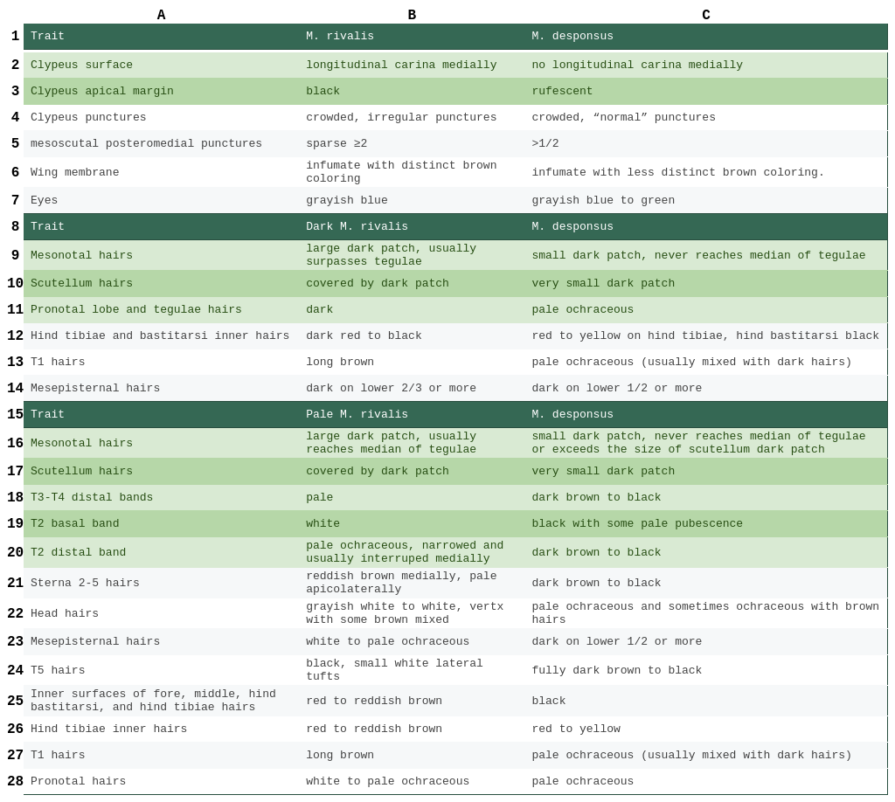
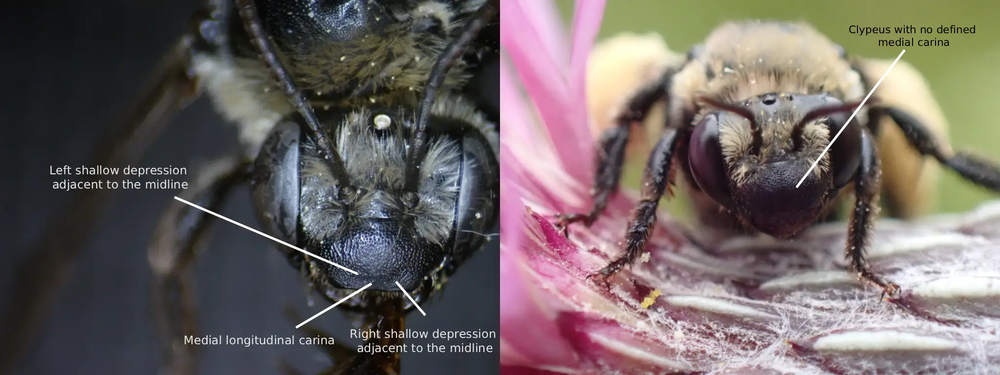Photo credits: (left) Christopher Wilson (All Rights Reserved); (right) Isabel Dalton (All Rights Reserved). Figure Gallery ➜')">
Fig. 10. A comparison of the clypeus of the females of M. rivalis (left) and M. desponsus (right). Photo credits: (left) Christopher Wilson (All Rights Reserved); (right) Isabel Dalton (All Rights Reserved).
Fig. 11. A comparison of the mesonotum of the females of M. rivalis (left) and M. desponsus (right). Note, this M. rivalis specimen is dark. Photo credits: (left) Brian Dykstra (CC-BY-NC 4.0); (right) Heather Holm (CC-BY-NC 4.0).
Fig. 12. A comparison of the lateral thoratic hairs of the females of M. rivalis (left) and M. desponsus (right). Note, this M. rivalis specimen is pale. Photo credits: (left) Christopher Wilson (All Rights Reserved); (right) Heather Holm (CC-BY-NC 4.0).
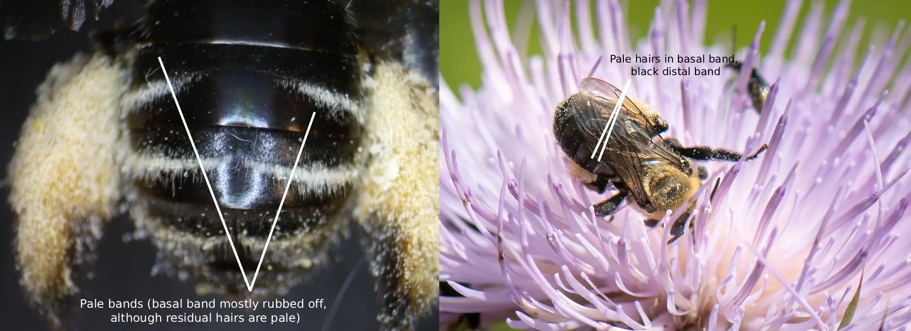Photo credits: (left) Christopher Wilson (All Rights Reserved); (right) Stephen Barten (All Rights Reserved). Figure Gallery ➜')">
Fig. 13. A comparison of the bands of the second tergum of the females of M. rivalis (left) and M. desponsus (right). Note, this M. rivalis specimen is pale. Photo credits: (left) Christopher Wilson (All Rights Reserved); (right) Stephen Barten (All Rights Reserved).
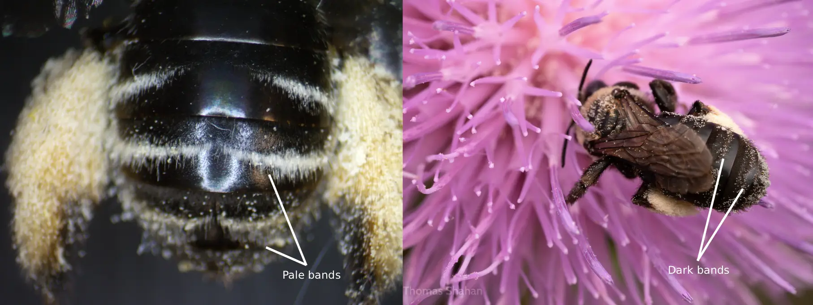Photo credits: (left) Christopher Wilson (All Rights Reserved); (right) Thomas Shahan (CC-BY-NC 4.0). Figure Gallery ➜')">
Fig. 14. A comparison of the bands on terga 3 and 4 of the females of M. rivalis (left) and M. desponsus (right). Note, this M. rivalis specimen is pale. Photo credits: (left) Christopher Wilson (All Rights Reserved); (right) Thomas Shahan (CC-BY-NC 4.0).
Male
The mandibles of M. rivalis rarely have a small yellow basal maculation, and the labrum very rarely has a pale spot. Whereas in M. desponsus,
the labrum and mandibles never have maculations. The clypeus of M. rivalis has a darkened posterior margin, usually with the posterior one-third
to one-half darkened very rarely ever more than that (clypeus never fully black) and the apical edge is black; posterior yellow area angled upward medially to form almost and
upside down “V”. Whereas in M. desponsus, the clypeus is almost entirely pale yellow with a rufescent apical edge (Fig. 15). The clypeus of M. rivalis has a distinct
longitudinal carina medially in the apical half, but also sometimes shorter, and the surface has crowded, irregular punctures. Whereas in M.
desponsus, the punctures are more “normal”, smaller and denser than the female’s clypeal punctures, and there is no defined medial carina. The
punctures on the posteromedian area of the mesoscutum of M. rivalis are sparse, mostly separated by 2 puncture diameters, sometimes more. Whereas
in M. desponsus, the punctures are separated by slightly more than half a puncture diameter. The punctures in the interband zone of the second
tergum of M. rivalis usually have slightly sparser punctures than the interband zones of terga three and four, whereas in M. desponsus, the punctures
are rarely, if ever, sparser.
Setal differences are as follows: Generally, M. rivalis is significantly lighter than M. desponsus, especially on the outer surfaces of the legs and
periphery of the thorax (Fig. 16). The dark M. rivalis has pale ochraceous to white head hair, excluding the hairs on the vertex, which are brown.
Whereas in M. desponsus, the hairs on the head which are black to dark brown, except for the vertex and face, which are completely pale ochraceous,
and sometimes a mix of ochraceous and dark brown. The mesosoma of M. rivalis has white to ochraceous hairs, except for the mesonotum which has a
posteromedial dark patch of hairs that reaches anteriorly to the middle of the tegulae and sometimes beyond (dark patch on scutellum medially and on
mesoscutum posteriorly). Whereas in M. desponsus, the mesonotal hairs are mostly pale ochraceous except for the usually present posteromedian patch
of dark brown to black hairs on the mesoscutum that doesn’t surpass the tegulae, and usually isn’t larger than the small patch on the scutellum. The
scutellum also has a small patch medial dark brown to black hairs. The first tergum of M. rivalis has long pale basal hairs and short dark apical
hairs, whereas in M. desponsus, these hairs are white to pale ochraceous and often mixed with darker hairs. The second tergum has a basal pale band
and a complete pale distal band that narrows medially. Whereas in M. desponsus, the basal pale band is mostly dark brown to black with some pale hairs,
and the distal band is black to brown. The third tergum of M. rivalis has a distal pale band that gets interrupted medially by brown hairs, whereas
in M. desponsus, this band is dark brown to black. The legs of M. rivalis have pale hairs, especially on the outer surfaces, except for the inner
surfaces of the hind tibiae, the fore basitarsi, the middle basitarsi, and the hind basitarsi, which are red to reddish brown. Whereas in M. desponsus,
the legs have dark brown to black hairs other than inner surfaces of the hind tarsi. The pale M. rivalis follow this same pattern, except as follows:
there are no dark hairs on the head; the mesoscutum and or scutellum do not have dark patches; terga 2-4 have pale bands and terga 5-6 have lateral
tufts of white long hairs (Fig 17); sterna 2-5 have red hairs medially and pale ochraceous hairs laterally, and sternum 6 has brown hairs; legs
completely white except for the outer surfaces of the fore tarsi and fore tibiae, which are pale brown, as well as the inner surfaces of the hind
tibiae, fore basitarsi, middle basitarsi, and hind basitarsi, which are red.
Table 2. A comparison of trait differences between male M. rivalis and M. desponsus. The traits are sorted
from most to least diagnostic. Traits highlighted in green
are the most important traits when comparing between M. rivalis and M. desponsus. Traits not explicitly referring to hair refer to integument.
Three seperate sections of the table are given 1) integument comparison 2) dark M. rivalis comparison 3) pale M. rivalis comparison. Each of these
sections follow the pattern listed above respectivly.
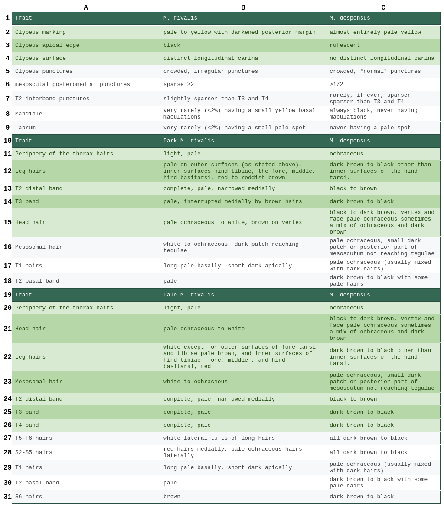
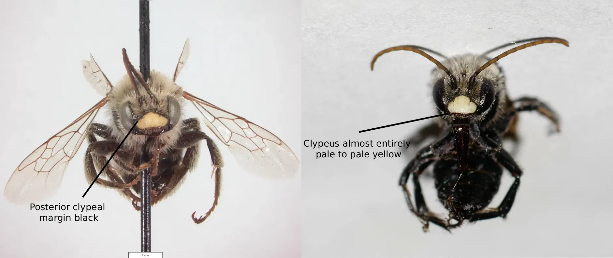Photo credits: (left) Monte L. Bean Life Science Museum (CC BY-NC 4.0); (right) iNaturalist username: hobiecat (CC-BY-NC 4.0) Figure Gallery ➜')">
Fig. 15. A comparison of the clypei of male M. rivalis (left) and M. desponsus (right). Photo credits: (left) Monte L. Bean Life Science Museum (CC-BY-NC 4.0); (right) iNaturalist username: hobiecat (CC-BY-NC 4.0).
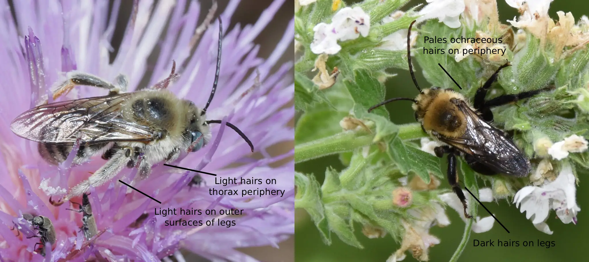 Photo credits: (left) Wendy McCrady (CC BY 4.0); (right) Richard Baxter (CC-BY-NC 4.0) Figure Gallery ➜')">
Fig. 16. A comparison of the general leg and thoratic periphery coloration of male M. rivalis (left) and M. desponsus (right). Note, this M. rivalis specimen is pale. Photo credits: (left) Wendy McCrady (CC-BY 4.0); (right) Richard Baxter (CC-BY-NC 4.0).
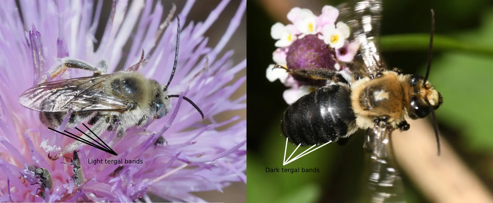Photo credits: (left) Wendy McCrady (CC BY 4.0); (right); Josh Klostermann (All Rights Reserved). Figure Gallery ➜')">
Fig. 17. A comparison of the bands of the terga of male M. rivalis (left) and M. desponsus (right). Note, this M. rivalis specimen is pale. Photo credits: (left) Wendy McCrady (CC-BY 4.0); (right); Josh Klostermann (All Rights Reserved).
However, with all of this said, a newer report of bees in Minnesota suggests that these characteristics listed by Laberge (1956a), may not be as diognotic as previously thought (Portman et al., 2023). As stated by Portman et al. (2023) "Melissodes was last revised over 60
years ago (LaBerge 1956a, 1956b, 1961) and contains multiple species that need to have their taxonomic status clarified (such as M. desponsus and M. rivalis)." This suggests that populations of M. rivalis and M. desponsus
that are largely seperated may exhibit these characters as described by Laberge (1956a), but populations with overlapping ranges (such as the ones found in Minnesota), may exibit traits outside of the descriptions Laberge (1956a) presented.
Literature Cited
1. Ascher, J.S. & Pickering, J. (2025). Discover Life bee species guide
and world checklist (Hymenoptera: Apoidea: Anthophila): Data records. Discover Life. Available at:
https://www.discoverlife.org/mp/20q?guide=Apoidea_species (Accessed 08 November 2025).
2. Bohart, George E. and Knowlton, G. F., "The Bees of Curlew Valley (Utah and Idaho)" (1973). All PIRU
Publications. Paper 790. https://digitalcommons.usu.edu/piru_pubs/790
3. Cockerell, T.D. (1905a) "New and Little-Known American Bees." The Entomologist, 38(505), pp. 145–149. https://www.biodiversitylibrary.org/page/25338093
4. Cockerell, T.D. (1905b) ‘Some new eucerine bees from the West’, Psyche: A Journal of Entomology, 12(5), pp. 98–105. doi:10.1155/1905/73160.
5. Cresson, E. T. (1872). Hymenoptera texana. American Entomological Society. https://doi.org/10.5962/bhl.title.9428
6. Freitas, F.V. et al. (2023) ‘UCE phylogenomics, biogeography, and classification of long-horned bees (hymenoptera: Apidae: Eucerini),
with insights on using specimens with extremely degraded DNA’, Insect Systematics and Diversity, 7(4). doi:10.1093/isd/ixad012.
7. GBIF.org (08 November 2025) GBIF Occurrence Download, DOI available at time of access: https://doi.org/10.15468/dl.jghu9p.
Archive preserved at Zenodo: https://doi.org/10.5281/zenodo.175606262
8. International Commission on Zoological Nomenclature (ICZN). 1999. International Code of Zoological Nomenclature (Online). Edited by Ride, W.D.L.,
Cogger, H.G., Dupuis, C., Kraus, O., Minelli, A., Thompson, F.C. & Tubbs, P.K. International Commission on Zoological Nomenclature.
Available at: https://code.iczn.org/ (Accessed: 15 November 2025)
9. LaBerge, W.E. (1956a) ‘A revision of the bees of the genus melissodes in north and
Central America. part II (hymenoptera, Apidae)’, The University of Kansas science
bulletin, 38(8), pp. 533–578. doi:10.5962/p.376392.
10. LaBerge, W.E. (1956b) ‘A revision of the bees of the genus melissodes in north and Central America. part I.
(Hymenoptera, Apidae)’, The University of Kansas science bulletin, 37(18), pp. 911–1194. doi:10.5962/bhl.part.24549.
11. LaBerge, W.E. (1961) ‘A revision of the bees of the genus melissodes in north and Central America.
part III (hymenoptera, Apidae)’, The University of Kansas science bulletin, 42(5), pp. 283–663.
doi:10.5962/bhl.part.9821.
12. Lopez, C. (2017) THE BEE FAUNA OF THE HORSE MOUTAIN AND GROUSE MOUNTAIN REGION, HUMBOLDT COUNTY, CALIFORNIA. thesis. Humboldt State University.
13. Scullen, H. A, (1926). MELLISSODES MYSOPS COCKERELL NESTING IN
OREGON (ANTHOPHORIDAE, HYM.) Pan-Pacific Entomologist, 4(4), 176.
13. Parker, F. D., Tepedino, V. J., & Bohart, G. E. (1981). Notes on the Biology of a Common Sunflower Bee, Melissodes
(Eumelissodes) agilis Cresson. Journal of the New York Entomological Society, 89(1), 43–52. http://www.jstor.org/stable/25009235
14. Viereck, Henry. et al. (1906) ‘Synopsis of bees of Oregon, Washington, British Columbia and vancouver—V.’, The Canadian Entomologist, 38(9), pp. 297–304. doi:10.4039/ent38297-9.
15. Cockerell, T.D. (1937) "New and Little-Known American Bees." American Museum Novitates, 899, pp. 5.
16. Hawse, A.R. (2024) Patterns of Bee Diversity and Plant-Pollinator Interactions in the Palouse Prairie. thesis. University of Idaho.
17. Portman, Z. M. et al. (2023): A checklist of the bees (Hymenoptera: Apoidea) of
Minnesota. Zootaxa 5304 (1): 1-95, DOI: 10.11646/zootaxa.5304.1.1, URL:
http://dx.doi.org/10.11646/zootaxa.5304.1.1
How to cite this article:
Hogland, F. E. (2025). Melissodes rivalis.The Melissodes Project.
Latest version available at https://themelissodesproject.wildref.org/melissodes-rivalis.html.